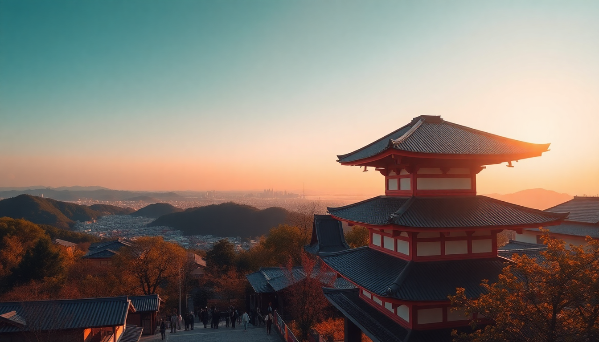

Best Day Trips from Kyoto: Nara, Uji & Arashiyama

I spent a week based in Kyoto and quickly realized the city itself is only half the story. The real magic is how easy it is to hop a train and end up somewhere completely different—deer-filled parks, tea-plantation hills, or bamboo tunnels. Here’s what I learned doing three day trips from Kyoto Station, with no fluff and real train times.
Why base yourself in Kyoto for day trips?
Kyoto sits at the center of a rail hub that connects to Nara, Uji, and Arashiyama in under an hour each. I stayed near Kyoto Station (specifically at Hotel Granvia Kyoto, which sits right on top of the station) and never needed a rental car. The JR Nara Line and Keihan Line both run frequently, and a Suica card works on all of them—just tap and go. No need for a rail pass unless you’re doing multiple long-distance trips in one day.
The key advantage: you can sleep in, grab a coffee at % Arabica near the station, and still be feeding deer in Nara by 10 a.m. I did all three trips on separate days and never felt rushed.
Is Nara worth the hype, or is it just deer?
Nara is worth it, but you need to go in with eyes open. The deer are everywhere—hundreds of them roaming Nara Park—and they’re not shy. I bought a pack of shika senbei (deer crackers) from a vendor near the Todai-ji Temple entrance, and within seconds I had three deer nudging my elbows. They bow, which is adorable, but they also nip if you tease them with the cracker. Keep your bag zipped.
Beyond the deer, Todai-ji houses a 15-meter bronze Buddha statue inside the world’s largest wooden building. The scale is humbling. I also walked to Kasuga Taisha, a Shinto shrine with hundreds of bronze and stone lanterns. The path through the forest is quiet and shaded—good escape from the deer crowds.
- Getting there: Take the JR Nara Line from Kyoto Station to Nara Station (50 minutes, ¥760). Walk east 15 minutes to Nara Park.
- Food stop: Nakatanidou for fresh mochi-pounding. They do a show every few minutes. The mochi is warm and soft.
- Time needed: 4–5 hours minimum. I did 9 a.m. to 2 p.m. and felt satisfied.
- Watch out: The deer are aggressive around food stalls. Eat your snacks away from the park.
Is Uji only for matcha lovers?
Uji is the birthplace of Japanese green tea, and yes, it’s a matcha paradise—but there’s more. I went because I wanted to see Byodo-in Temple, the building on the ¥10 coin. The Phoenix Hall reflects beautifully in the pond, and the interior has a museum with a tiny wooden Buddha. It’s small but serene.
The real draw for me was the tea culture. I walked down Byodo-in Omotesando, the shopping street leading to the temple, and stopped at Nakamura Tokichi Honten for a matcha parfait—layers of ice cream, jelly, red bean, and mochi. It’s rich but not cloying. I also did a tea-tasting at Tsuen Tea, which has been running since 1160. The owner poured me a bowl of ceremonial matcha and explained the grades. It felt less touristy than Kyoto’s tea houses.
- Getting there: Take the JR Nara Line to Uji Station (20 minutes, ¥240) or the Keihan Line to Uji Station (30 minutes, ¥310).
- Food stop: Ito Kyuemon for matcha soba noodles. Savory and unexpected.
- Time needed: 3–4 hours. I combined it with a morning in Fushimi Inari (same train line) and it worked perfectly.
- Tip: Buy matcha powder at Marukyu Koyamaen—it’s cheaper than in Kyoto and fresher.
Can you actually enjoy Arashiyama without the crowds?
Arashiyama is crowded, but you can beat the worst of it. I arrived at Arashiyama Bamboo Grove at 7:30 a.m. on a weekday and had the path nearly to myself for twenty minutes. By 8:30, it was shoulder-to-shoulder. Go early or skip it entirely—the bamboo is impressive but not worth fighting a crowd.
After the grove, I walked to Tenryu-ji Temple and paid the extra ¥100 for the garden exit that leads directly to the grove. The garden itself is more interesting than the bamboo—a pond with koi, mossy hills, and a teahouse. Then I crossed the Togetsukyo Bridge and hiked up to Iwatayama Monkey Park. The hike is steep (20 minutes uphill), but the view of Kyoto from the top is worth it. The monkeys roam free and you can feed them from inside a caged hut.
- Getting there: Take the JR Sagano Line from Kyoto Station to Saga-Arashiyama Station (15 minutes, ¥240).
- Food stop: Yudofu Sagano for tofu hot pot. Simple, clean, and perfect after the monkey hike.
- Time needed: 4–5 hours. I did 7:30 a.m. to noon.
- Watch out: The Romantic Train is overrated. It’s a slow scenic ride along the river—nice, but not worth the hour-long queue. Skip it and walk the riverside path instead.
FAQ
What’s the best order to do these trips in one day? Don’t try all three in one day. Pick one. If you’re set on two, do Uji in the morning (quiet, small) and Nara in the afternoon (longer hours). Arashiyama needs its own morning. Use the JR Pass if you have one—it covers Nara and Arashiyama lines.
Which trip is best for families with kids? Nara. The deer are interactive, the park is flat, and Nara National Museum has kid-friendly exhibits. Uji is too tea-focused for young children. Arashiyama’s monkey park is fun but the hike is tough for small legs.
Do I need to book tickets in advance? For Todai-ji and Byodo-in, no—just buy at the gate. For the Sagano Scenic Railway (Romantic Train), yes, book online at least a week ahead if you want a specific time. I didn’t book and regretted the queue.
Conclusion
- Nara is the most iconic trip—deer, giant Buddha, and easy logistics. Go early to avoid tour bus crowds.
- Uji is the hidden gem—quiet, matcha-focused, and cheap to reach. Pair it with Fushimi Inari for a full day.
- Arashiyama requires strategy—arrive at dawn for the bamboo grove, then hike to the monkeys. Skip the Romantic Train.
- Kyoto Station is your hub. Stay nearby, use a Suica card, and don’t overplan. These trips work best when you leave room for spontaneous food stops.